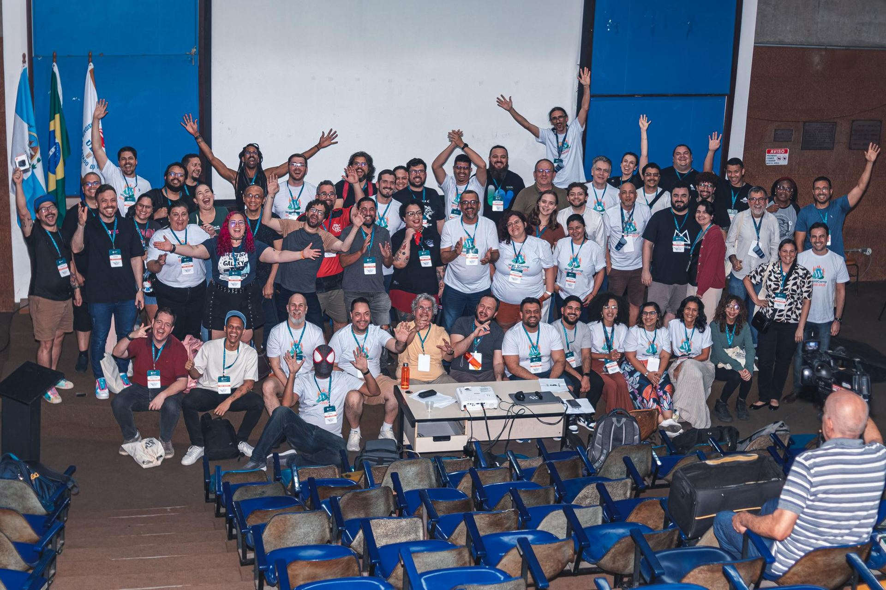
Apresentação de
Patrocínio
WordCamp Brasil 2026
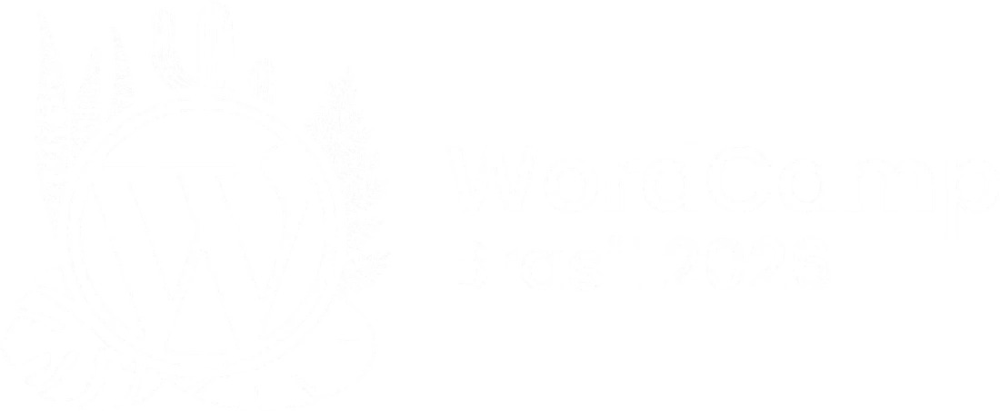
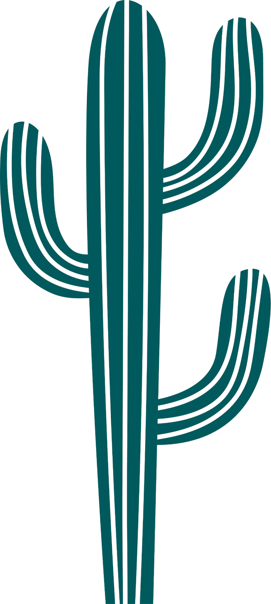
O que é o WordCamp?
O WordCamp Brasil é a conferência nacional oficial voltada para usuários de WordPress, incluindo programadores, designers, criadores de conteúdo, profissionais de marketing e empreendedores de todo o país.
O evento reúne a comunidade para palestras, workshops e debates sobre as inovações, segurança e tendências da web global.
O WordPress é a plataforma que move a internet, sendo o sistema de gerenciamento de conteúdo (CMS) mais popular do mundo, utilizado em mais de 41% de todos os sites existentes atualmente.
— Fonte: w3techs.com (Junho 2026)
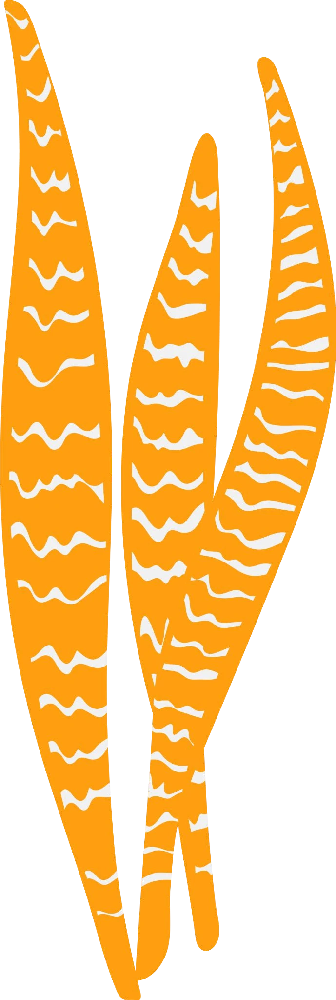
O Ecossistema
Nossos participantes incluem desde desenvolvedores e profissionais renomados do mercado de tecnologia até criadores digitais, blogueiros e tomadores de decisão em agências e grandes corporações.
O WordPress é a escolha de grandes marcas globais e nacionais, como NASA, New York Times, CNN, Forbes, GM, Sony e TechCrunch, consolidando sua robustez no mercado corporativo.
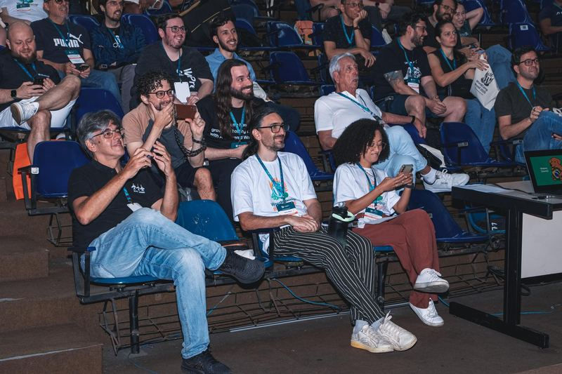
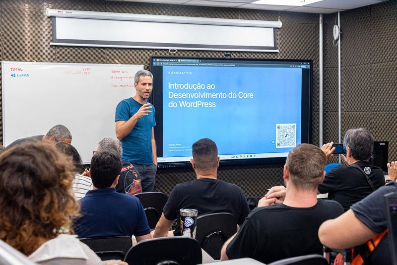
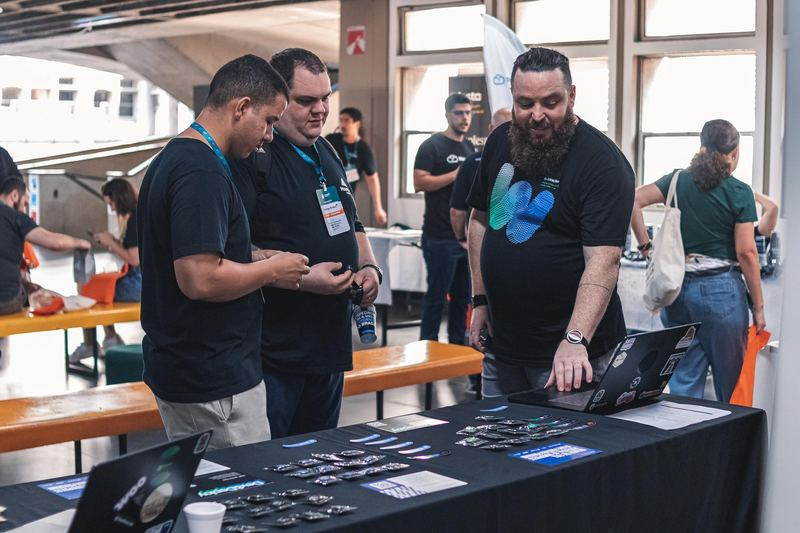
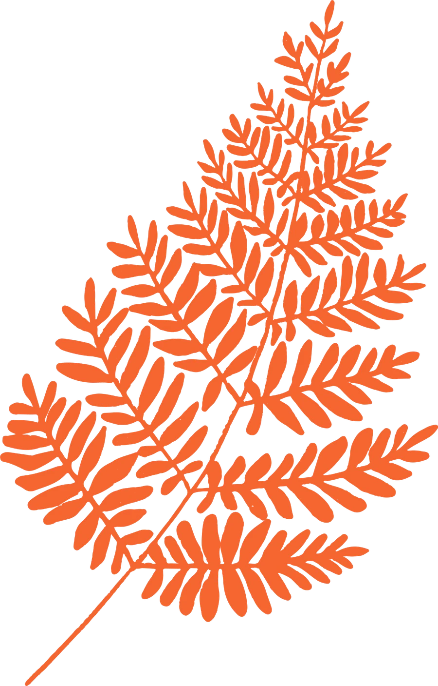
Quando acontecerá
O evento será realizado nos dias 30 e 31 de outubro de 2026, estruturado para receber até 300 participantes de todo o país e exterior.
- Sexta-feira (30/10) — Contributor Day: Um dia prático de imersão e colaboração, reunindo a comunidade para contribuir diretamente com o ecossistema global do WordPress.
- Sábado (31/10) — Palestras e Networking: O dia principal do evento. Contará com palestras simultâneas divididas em duas trilhas de conhecimento focadas em tecnologia, negócios, design e tendências.
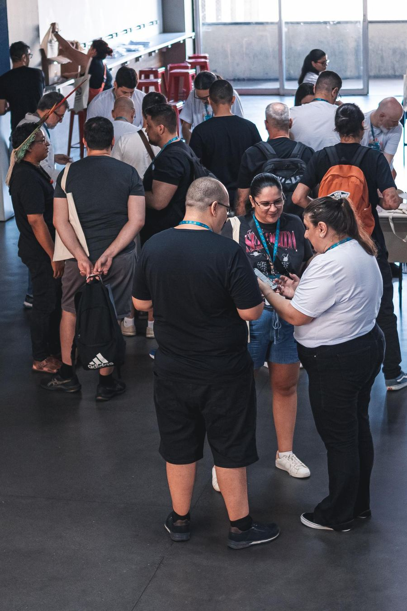
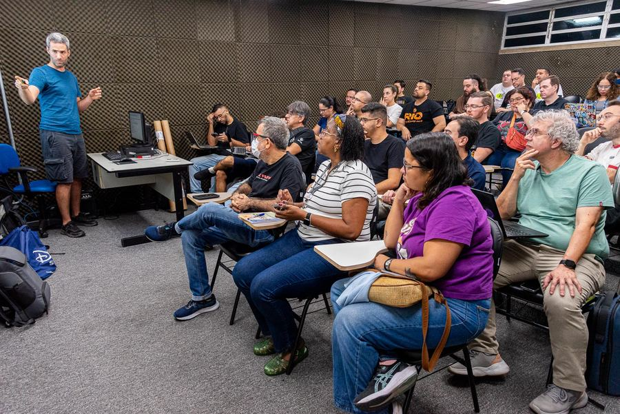
Onde acontecerá
O WordCamp será sediado na Universidade FUMEC (Rua Cobre, 200 – Bairro Cruzeiro), localizada na prestigiada e estratégica Região Centro-Sul de Belo Horizonte/MG.
A instituição conta com auditórios modernos e uma ampla área de convivência que será dedicada exclusivamente à nossa feira de patrocinadores.
Além da excelente estrutura interna, a região oferece fácil acesso a uma vasta rede hoteleira e acesso pelo aeroporto de Confins (CNF).
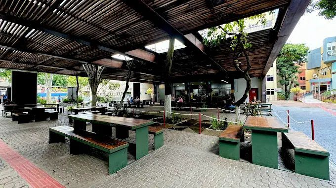
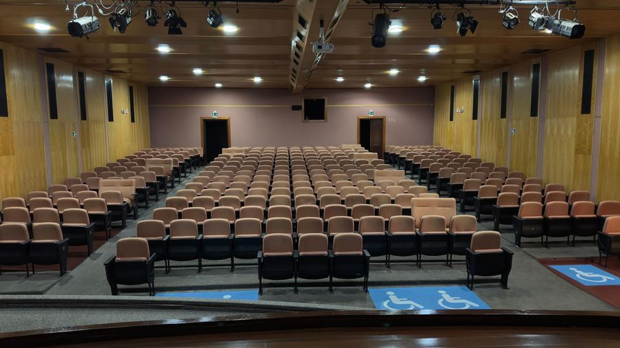
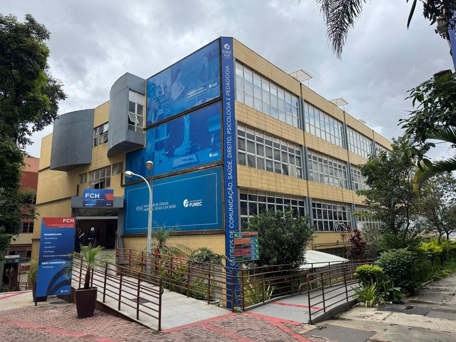
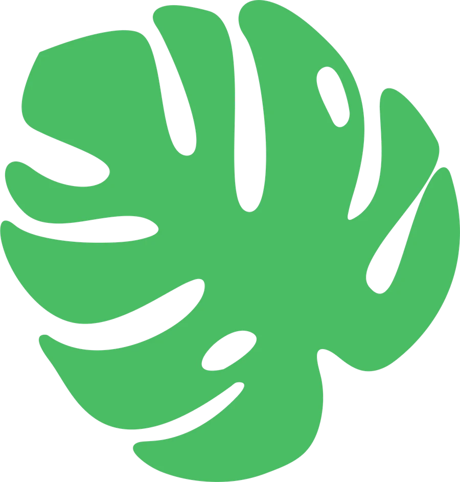
Edições anteriores
A comunidade WordPress de Belo Horizonte tem experiência na organização de eventos, tendo encontros mensais e WordCamps em 2014, 2015, e 2016.
O primeiro WordCamp Brasil aconteceu em 2009, em São Paulo, e o último em 2025, no Rio de Janeiro, reunindo mais de 130 pessoas em dois dias de evento memoráveis.
Em 2026, a comissão organizadora une forças com líderes e voluntários de comunidades de todo o país (Belo Horizonte, Rio de Janeiro, São Paulo, Curitiba, e Joinville) para entregar a maior edição nacional já realizada.
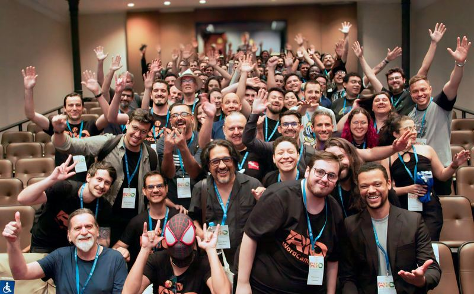
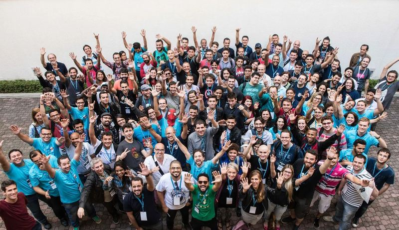
Perfil do Público
Quem participa do maior encontro da comunidade WordPress no Brasil (base edição 2025).
Onde Atuam
- Agências de dev./hospedagem
- 41%
- Autônomos / freelancers
- 25%
- Marketing / Relações públicas
- 17%
- E-commerce / loja virtual
- 15%
O que mais interessa
- Desenvolvimento e ferramentas
- 76%
- Marketing digital
- 55%
- Infraestrutura e performance
- 51%
- Gerenciamento de projetos
- 50%
Por que patrocinar?
O WordCamp é um evento totalmente sem fins lucrativos, organizado por voluntários apaixonados por tecnologia e código aberto.
Todo o valor arrecadado com as cotas de patrocínio é 100% revertido para cobrir os custos operacionais do evento.
Estes voluntários são programadores, designers, publicitários, profissionais de marketing, educadores e empresários.
Eles possuem formação em diversas áreas e são membros da comunidade brasileira de WordPress.
Por que apoiar?
Muitos desses voluntários participam ativamente do mercado de trabalho relacionado ao WordPress, atuando em empresas brasileiras e internacionais.
São especialistas, formadores de opinião e até mesmo tomadores de decisões em suas empresas.
Nossas raízes, nossas conexões
Para o WordCamp Brasil, celebramos a diversidade que nos une como nação.
Cada planta não é apenas um símbolo de sua região predominante, mas também um reflexo dos valores que a comunidade WordPress Brasil celebra: crescimento, resiliência e a força que nasce da colaboração.
Juntos, somos um ecossistema vibrante, crescendo e florescendo em todas as direções.
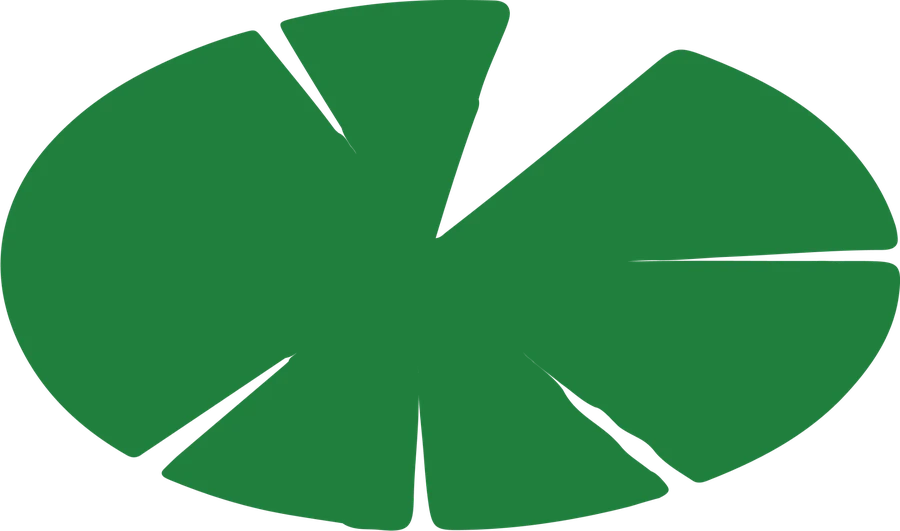
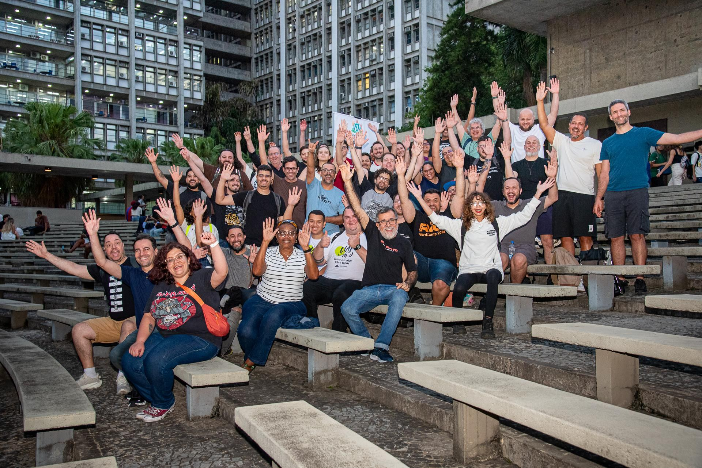
Sua marca ao lado da maior comunidade WordPress do Brasil
Centenas de desenvolvedores, designers e empreendedores digitais em um só lugar. Escolha sua cota e faça parte do WordCamp Brasil.
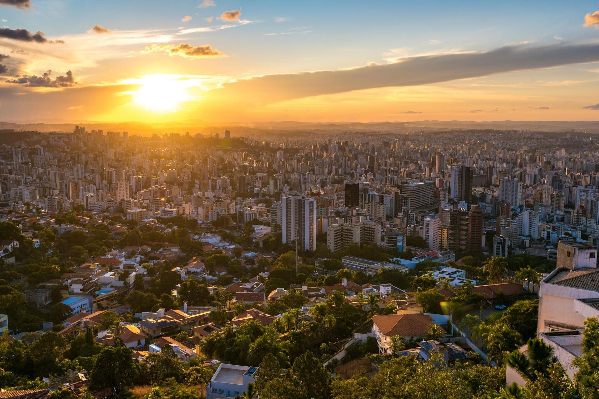
Cotas de
Patrocínio
Conheça as formas de apoiar o maior encontro da comunidade WordPress no Brasil.
Cota Tropeirão
Ouro- 1x Mesa na área de Patrocinadores, liberada para trazer materiais próprios (brindes/swag, banner e toalha de mesa)
- Logo do patrocinador em destaque no site do evento
- Logo do patrocinador no painel de fundo do evento
- 3x publicações no Instagram do WordCamp Brasil
- 2x publicações no site do evento divulgando o patrocinador
- Releases para mídias relacionadas ao WordCamp
- Agradecimento público no encerramento do evento
- Sorteio de brinde do patrocinador ao final do evento
- 2x ingressos para o jantar com palestrantes
- 2x ingressos para todo o evento
- Material de divulgação na ecobag
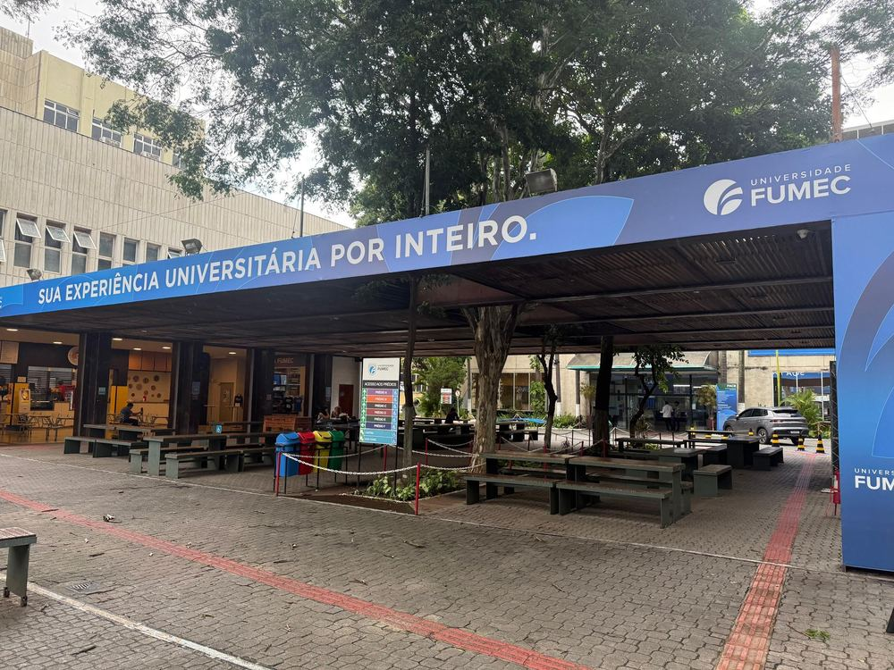
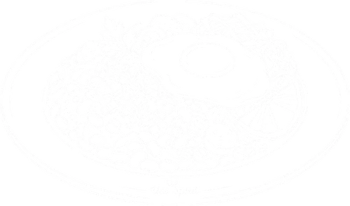
Cota Torresmo de Rolo
Prata- 1x Mesa na área de Patrocinadores, liberada para trazer materiais próprios (brindes/swag, banner e toalha de mesa)
- Logo do patrocinador no site do evento
- Logo do patrocinador no painel de fundo do evento
- 2x publicações no Instagram do WordCamp Brasil
- 1x publicação no site do evento divulgando o patrocinador
- Releases para mídias relacionadas ao WordCamp
- Agradecimento público no encerramento do evento
- Sorteio de brinde do patrocinador ao final do evento
- 2x ingressos para o jantar com palestrantes
- 2x ingressos para todo o evento
- Material de divulgação na ecobag
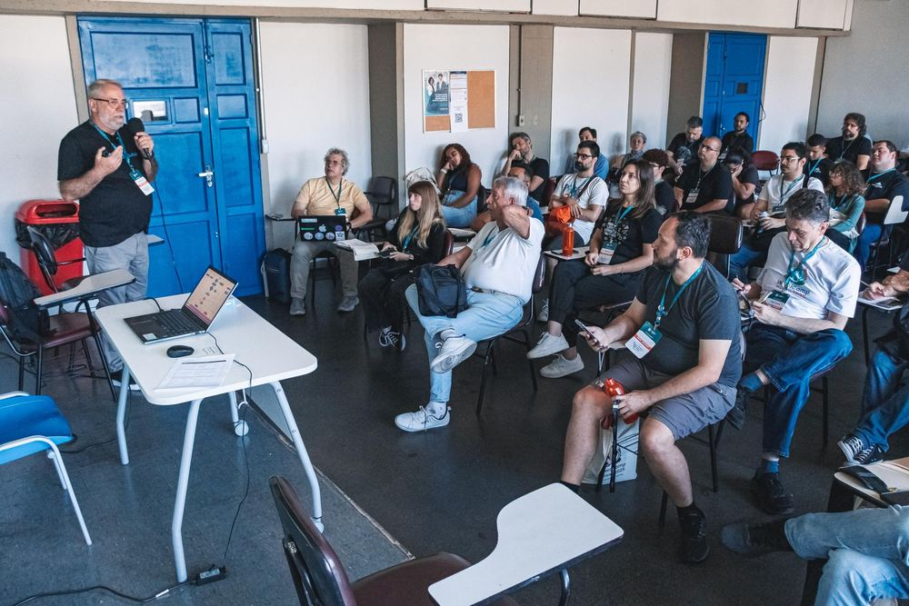
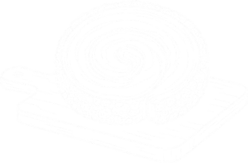
Cota Pão de Queijo
Bronze- Logo do patrocinador no site do evento
- Logo do patrocinador no painel de fundo do evento
- 1x publicação no Instagram do WordCamp Brasil
- 1x publicação no site do evento divulgando o patrocinador
- Releases para mídia relacionadas ao WordCamp
- Agradecimento público no encerramento do evento
- 1x ingresso para o jantar com palestrantes
- 1x ingresso para todo o evento
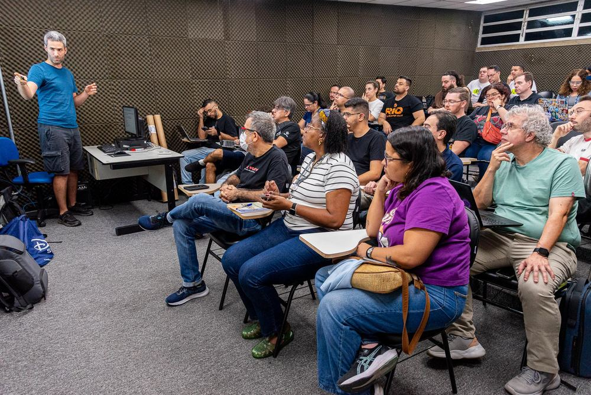
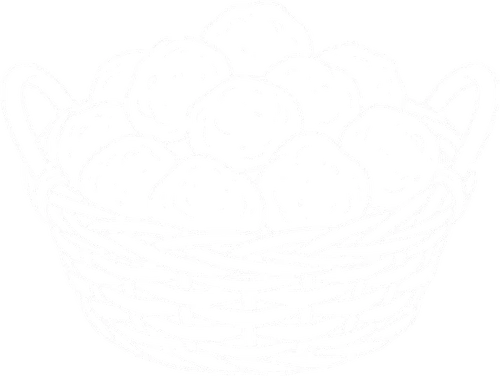
Cota Cafezinho
Ferro- Logo do patrocinador no site do evento
- 1x publicação no Instagram do WordCamp Brasil
- Releases para mídia relacionadas ao WordCamp
- Agradecimento público no encerramento do evento
- 1x ingresso para todo o evento
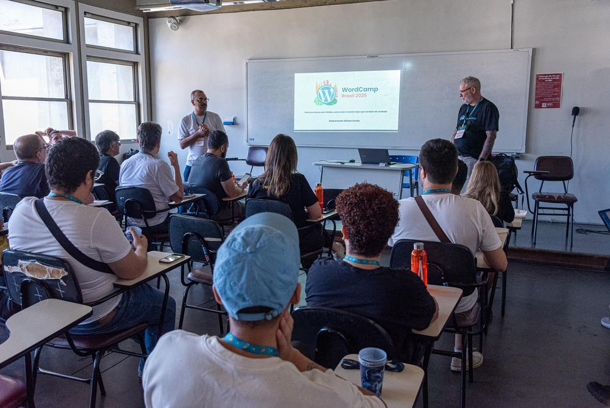
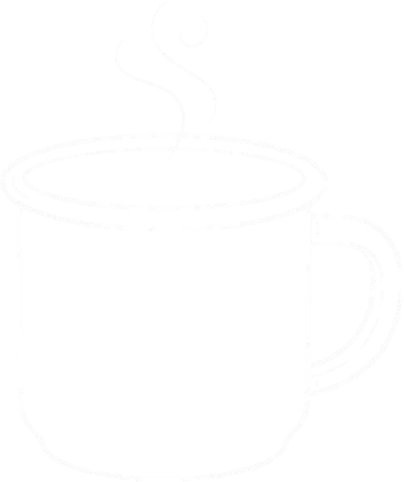
Cotas de Patrocínio
| OuroR$ 6.000,00 | PrataR$ 3.000,00 | BronzeR$ 1.500,00 | FerroR$ 750,00 | |
|---|---|---|---|---|
| Ingressos | 2 | 2 | 1 | 1 |
| Jantar palestrantes | 2 | 2 | 1 | 0 |
| Perfil Institucional no Site | 1 | 1 | 1 | 1 |
| Publicações Instagram | 3 | 2 | 1 | 1 |
| Publicações no site | 2 | 1 | 1 | 0 |
| Logo no site do evento | ✓ | ✓ | ✓ | ✓ |
| Agradecimento público | ✓ | ✓ | ✓ | ✓ |
| Releases para mídia | ✓ | ✓ | ✓ | ✓ |
| Logo no painel de fundo | ✓ | ✓ | ✓ | – |
| Mesa na área de Patrocinadores | ✓ | ✓ | – | – |
| Material na ecobag | ✓ | ✓ | – | – |
| Sorteio de brinde | ✓ | ✓ | – | – |
| Banner no espaço | ✓ | – | – | – |
| Entrevista no vídeo | 1 minuto | 30 segundos | – | – |
Contatos
Contatos para área comercial
WordCamp Brasil 2026
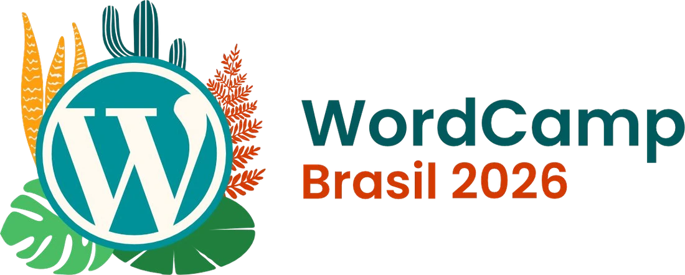